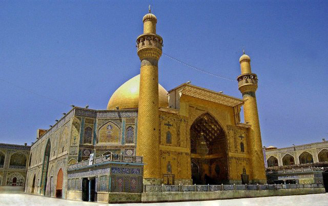

Four days of spiritual ziyarat for the time-pressed pilgrim. Kadhimiya Mosque in Baghdad, the shrines of Karbala, and a stop at ancient Babylon — the essential Islamic pilgrimage sites of Iraq in the minimum possible time without cutting corners on what matters.
This is ideal for those who can only take a long weekend or have an existing trip to the region and want to add Iraq's holy cities. Adam ensures every visit is conducted with the care and respect the sites deserve, regardless of the schedule.
Meet and greet at Baghdad International Airport. Transfer to hotel. Evening visit to Kadhimiya Mosque with its four golden minarets and twin golden domes — one of the most important Shia shrines in Iraq.
Morning ziyarat at Kadhimiya (shrines of Imam Musa al-Kadhim and Imam Muhammad al-Jawad). Afternoon drive to ancient Babylon for a full site visit. Return to Baghdad for evening.
Drive to Karbala. Full day of ziyarat at the Shrine of Imam Hussain ibn Ali and the Shrine of Abbas ibn Ali. Evening along Bain al-Haramayn, the illuminated road between the two shrines.
Morning for personal prayer and final ziyarat in Karbala. Afternoon transfer to Baghdad International Airport for departure.